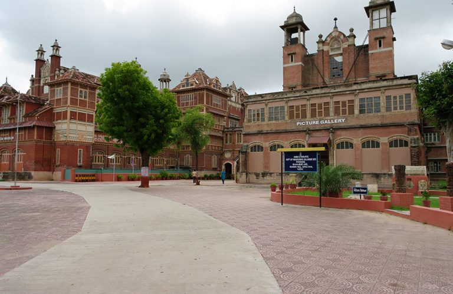

Rajkot is a city in the western Indian state of Gujarat. In central Jubilee Garden are the Lang Library, with Gujarati literature, and the Watson Museum, with paintings and artifacts documenting British colonial rule. Kaba Gandhi No Delo, the house where Mahatma Gandhi spent part of his childhood, displays photos of the Indian leader and his belongings. The Rotary Dolls Museum exhibits dolls from around
the world

Patan, the former capital of Gujarat, is a place famous for Patola sarees, one of the finest hand-made textiles in the world. ... Also known as the double Ikat, it is woven only in Bali, Indonesia besides Patan.
The city is also known as Sanskari Nagari (The Cultural City) and Kala Nagari (the city of art) of India. The city is known for the Lakshmi Vilas Palace, the residence of Baroda State's Maratha royal family, the Gaekwads, of the Gaekwad Dynasty. It is also the home of the Maharaja Sayajirao University of Baroda.
Vadodara also known as Baroda, is the third largest city in the Indian state of Gujarat. ... The city got its name due to abundance of Banyan (Vad) trees found in the city. The city is also known as Sanskari Nagari (The Cultural City) and Kala Nagari (the city of art) of India.
 OR
OR